Case Studies — AI Architecture in the Real World
Learning from Others’ Journeys
There is no substitute for learning from other people’s mistakes — or their hard-won successes. The case studies in this chapter are composites, drawn from real enterprise AI transformations I have witnessed, participated in, or studied closely. Names and details have been changed, but the architectural decisions, the tensions, and the lessons are all real. Each one illustrates a different set of trade-offs, and taken together, they paint a picture of what it actually looks like when an enterprise goes from “we should use AI” to “we are using AI, and it is working.”
What I hope you take away from these stories is not a template to copy, but an instinct for recognizing patterns. Every organization is different, but the architectural forces at play — security, trust, integration, explainability — are remarkably consistent. If you can learn to see those forces at work, you will make better decisions in your own context.
Case Study 1: Global Bank — AI-Powered Compliance
The Challenge
Picture a compliance department stretched to its breaking point. This particular bank — one of the largest in the world, with operations spanning 40 countries — was drowning in regulatory documents. Every year, roughly 50,000 new regulations, amendments, guidance letters, and enforcement notices landed on their desks. Each one needed to be reviewed by a compliance officer who would read the document, determine which parts of the bank’s operations it affected, and draft an internal impact assessment.
On average, that review took four hours per document. Do the math and you will see the problem immediately: 50,000 documents at four hours each is 200,000 person-hours of work per year. That is roughly a hundred full-time compliance officers doing nothing but reading regulations. They were falling behind — not by a little, but by a lot. An 18-month backlog had accumulated, and regulators were beginning to ask pointed questions about whether the bank was keeping up with its obligations.
The Chief Compliance Officer went to the CTO with a simple message: “We cannot hire our way out of this. We need a different approach.”
The Architecture
The system they built was elegant in its simplicity, even if the implementation was anything but simple.

Four architectural decisions shaped the entire project, and each one tells a story about the forces that matter in enterprise AI.
The first, and arguably most consequential, was the decision to self-host the model. Regulatory documents are among the most sensitive materials a bank handles — they reveal the bank’s internal operations, its risk exposures, and its strategic positioning. Sending those documents to a third-party API was simply not an option, no matter how many security certifications the vendor could produce. The team deployed Llama 70B on their own infrastructure, inside their own data center, behind their own firewalls. No data left the network. This was more expensive and harder to operate than calling an API, but it was the only path the legal and risk teams would approve. It also gave the compliance team confidence that they were not creating a new risk while trying to manage existing ones.
The second decision was to keep humans firmly in the loop. The AI would draft the impact analysis — it would read the regulatory document, identify the relevant rules, map them to internal business processes, and write a first draft of what the bank needed to do. But the AI would never make the final determination. A compliance officer would always review, edit, and approve. This was partly a regulatory requirement and partly a trust decision. The team knew that if the AI made one high-profile mistake without human oversight, the entire program would be shut down.
Third, they built a confidence scoring system that was more than just a number — it was a workflow engine. Every AI output came with a confidence score, and that score determined where the work landed. High-confidence items — say, a routine amendment to a well-understood regulation — went to junior reviewers for quick validation. Low-confidence items — perhaps a novel regulatory framework from a jurisdiction the bank had only recently entered — went to senior reviewers who could exercise deeper judgment. This meant the most experienced people were spending their time on the hardest problems, not burning hours on routine work.
Finally, they built an audit trail that would make a regulator smile. Every AI decision was logged with the source document, the extracted rules, the model version used, the confidence score, and every action the human reviewer took. When regulators came to examine the bank’s compliance processes — and they did — the bank could show not just that it was keeping up, but exactly how every determination had been made and who had signed off on it.
Results
The transformation was dramatic, and it happened faster than almost anyone expected. Review time dropped from four hours per document to 45 minutes — an 81 percent reduction. That alone would have justified the project, but the throughput numbers were even more striking: the team cleared the entire 18-month backlog in just three months. The AI’s draft was accepted by the compliance officer without significant changes about 67 percent of the time, which meant that for two-thirds of all regulatory documents, the human review was essentially a quality check rather than a rewrite. And the economics worked convincingly — the platform cost roughly $2 million per year to run, compared to the $8 million per year it would have cost to hire enough additional compliance officers to achieve the same throughput.
Lessons Learned
The first and most important lesson was about sequencing trust. The team’s original plan was to have the AI both summarize the regulations and classify their impact. But the compliance officers were skeptical, and the project sponsor was wise enough to listen. They started with summarization only — the AI would produce a plain-English summary of each document, and the compliance officers would do the impact classification themselves. Over the course of three months, the officers came to trust the summaries. They were accurate, they caught nuances, and they saved time. Only then did the team introduce AI-assisted classification, and by that point, the officers were ready for it. The lesson is universal: build trust incrementally, one capability at a time.
The second lesson was about model size and domain expertise. The team’s first attempt used a 7-billion-parameter model, reasoning that a smaller model would be cheaper to host and faster to run. It was a disaster. The smaller model made too many errors on legal terminology — confusing “material adverse change” with “material adverse effect,” for instance, which in regulatory language are quite different things. When they moved to the 70-billion-parameter model, the error rate dropped dramatically. The cost of running the larger model was real, but it was a fraction of the cost of lost trust if compliance officers started ignoring the AI’s output.
The third lesson surprised everyone: the user interface mattered as much as the AI itself. Compliance officers did not just want to read the AI’s summary — they wanted to see exactly which passage in the source document supported each claim. The architecture had to surface provenance at every step, with inline citations that linked back to specific paragraphs and page numbers. The first version of the interface showed only the summary, and adoption was sluggish. Once the team added inline source citations, adoption jumped almost overnight. The officers could trust the AI because they could verify it, and they could verify it because the interface made verification effortless.
Case Study 2: Healthcare System — Clinical Documentation
The Challenge
If you have ever spoken with a physician about their daily routine, you know that one topic comes up with dispiriting regularity: documentation. At this particular healthcare network — 200 physicians across multiple specialties and clinics — doctors were spending an average of two hours per day writing clinical notes, discharge summaries, and referral letters. Two hours. That is two hours taken away from patient care, from continuing education, from their families, from sleep. It is the number one driver of physician burnout, and burnout was driving attrition at this network at an alarming rate. Experienced physicians were leaving for concierge practices or early retirement, and the cost of replacing a single physician can run into the hundreds of thousands of dollars.
The Chief Medical Information Officer had a vision: what if the documentation could write itself? Not perfectly, perhaps, but well enough that the physician’s job shifted from writing to reviewing? It sounded ambitious, but the technology had finally caught up to the ambition.
The Architecture
The system they designed used ambient recording — a microphone in the exam room that captured the conversation between doctor and patient — to generate clinical documentation automatically.

The architectural decisions here were shaped by a single overriding concern: patient safety. Everything else was secondary.
The first decision was to build the entire pipeline inside a HIPAA-compliant, BAA-covered cloud environment. Transcription, AI processing, and storage all happened within the same cloud region, and no data crossed compliance boundaries. This was non-negotiable — a single PHI leak would not just be a regulatory problem, it would be a betrayal of patient trust that could take years to repair. The team spent weeks working with their cloud provider to verify every data flow and every storage location before a single patient interaction was processed.
The second decision was to produce structured output, not just prose. When a doctor dictates a note, the AI scribe does not simply generate a paragraph of text — it extracts structured clinical data. Diagnoses, medications, procedures, and allergies are all identified and mapped to ICD codes that integrate directly with the EHR’s data model. This matters because a clinical note is not just a narrative for the next physician to read — it is a data source that drives billing, population health analytics, quality reporting, and research. Getting the structure right was harder than getting the prose right, and it required close collaboration between the AI team, clinical informaticists, and the EHR integration team.
The third decision echoed what we saw at the bank: the AI never auto-submits. It drafts the note, and the physician reviews and signs. But this team went further than just a policy — they enforced it architecturally. There is no code path, no API endpoint, no workflow that allows an AI-generated note to land in the EHR without a physician’s signature. Even if a developer accidentally removed a UI check, the backend would reject the submission. This kind of defense-in-depth matters enormously in healthcare, where a single erroneous note could affect treatment decisions.
The fourth decision was one that the team did not initially appreciate would be so important: specialty-specific prompt templates. A cardiology note has a fundamentally different structure than an orthopedic note or a psychiatry note. Cardiologists want to see ejection fraction and rhythm findings front and center. Orthopedic surgeons want range-of-motion measurements and imaging results. Psychiatrists need detailed mental status examinations. The team’s first attempt used a single generic medical prompt, and the feedback was brutal — no specialist was happy with the output. They ended up building a library of prompt templates, versioned by specialty, and the quality of the notes improved dramatically once each specialty had its own template.
Results
The impact on physician quality of life was profound. Documentation time dropped from two hours per day to about 30 minutes — and even that half hour was mostly spent reviewing and approving, not writing from scratch. Physician satisfaction scores improved by 40 percent, which in the healthcare world is a remarkable number. The quality of the notes actually improved, because the AI produced a consistent structure with fewer omissions than a tired physician writing at 10 PM after a full day of patient care. And coding accuracy — the assignment of ICD codes for billing and clinical purposes — improved by 12 percent, which had a direct impact on revenue and compliance.
Lessons Learned
The lesson that dominated every retrospective was about integration. The AI scribe itself was working within about a month of the project’s start. It could listen to a doctor-patient conversation and produce a high-quality clinical note. But getting that note into Epic — the electronic health record system used by the network — took six months. Six months of working with Epic’s APIs, navigating its data model, dealing with its authentication and authorization requirements, testing in its sandbox environment, and going through its app review process. The AI was the easy part. The integration was the hard part. This is a theme you will see again and again in enterprise AI, and it is the reason that the enterprise architect’s role is so critical.
The second lesson was about the specialty-specific prompts I mentioned earlier. It is worth emphasizing just how bad the generic approach was. When a cardiologist received a note that buried the ejection fraction at the bottom of the assessment and led with a generic review of systems, they did not just edit the note — they stopped using the system. And once a physician stops using a tool, getting them back is extraordinarily difficult. The team learned that in healthcare, there is no such thing as a one-size-fits-all clinical note, and the AI architecture had to reflect that reality.
The third lesson was about the ambient recording itself. Putting a microphone in an exam room raises immediate and legitimate privacy concerns, both from patients and from physicians. The team had to implement visible recording indicators — a light on the microphone that made it unmistakably clear when recording was active — and a patient consent workflow that happened before every visit. Some patients declined, and the system had to handle that gracefully, falling back to traditional documentation. The lesson is that AI architecture is not just about models and APIs — it is about the human experience of interacting with the system, and the trust that must be established before technology can do its work.
Case Study 3: Retailer — AI-Driven Supply Chain
The Challenge
Retail supply chain is one of those domains where small improvements in accuracy translate into enormous amounts of money. This particular retailer — 500 stores, 50,000 SKUs ranging from fresh produce to consumer electronics — was using statistical forecasting models that were updated quarterly. A team of demand planners would review the forecasts, adjust them based on their own experience, and feed the numbers into the replenishment system.
The problem was not that the forecasts were terrible — they were decent, as quarterly statistical models go. The problem was that “decent” was costing the company a fortune. Inaccurate forecasts produced two kinds of pain: overstock, which led to $200 million per year in markdowns as the company slashed prices to move excess inventory, and stockouts, which led to $80 million in lost sales when products customers wanted were simply not on the shelf. That is $280 million per year in value destruction from forecasting errors. Even a modest improvement would be worth tens of millions.
The VP of Supply Chain and the CTO sat down together and asked a simple question: “What would it take to update our forecasts daily instead of quarterly, and to incorporate data sources we have never used before?” That question launched a two-year transformation that would eventually involve traditional machine learning, generative AI, and a level of systems integration that tested the enterprise architecture team’s patience and skill.
The Architecture
The architecture that emerged was notable for its pragmatism. The team resisted the temptation to throw a large language model at the forecasting problem — which, in the hype cycle of 2024-2025, took real courage — and instead chose the right tool for each part of the problem.

The core forecasting engine was a gradient-boosted ensemble model built on XGBoost. This was not a fashionable choice — nobody writes breathless blog posts about gradient boosting anymore — but it was the right choice. For tabular prediction tasks with structured features, XGBoost is fast, interpretable, well-understood, and extremely competitive. The model produced a forecast for every combination of SKU, store, and day — which is millions of individual predictions — and it did so in minutes rather than hours. Generative AI was added later, not to make predictions, but to explain them. Store managers could ask questions like “Why is the system ordering so much sunscreen for next week?” and receive a natural-language explanation: “A heat wave is forecast for your region starting Thursday, and last year’s heat wave at your store drove a 340 percent increase in sunscreen sales.”
The second key decision was automated retraining with drift detection. The models retrained weekly on fresh data, but the team also implemented continuous monitoring using Population Stability Index. If the statistical distribution of incoming data shifted meaningfully — say, a sudden change in purchasing patterns due to an unexpected event — emergency retraining would trigger automatically. This meant the models stayed current without requiring constant human supervision.
Third, they adopted a rigorous A/B testing framework for model deployment. When a new model version was ready, it would serve forecasts for 10 percent of stores for two weeks. The team would compare its performance against the existing model on real outcomes — actual sales versus predicted sales — and only deploy to 100 percent of stores if the new model demonstrated a clear improvement. This discipline prevented several “improvements” that looked good on historical data but performed poorly in production.
Fourth, and this is a detail that enterprise architects should pay particular attention to, the team invested heavily in a feature store built on Feast. The feature store ensured that the exact same feature computation pipeline was used during training and during real-time serving. This might sound like a small technical detail, but training-serving skew — where the model is trained on features computed one way and served features computed a slightly different way — is one of the most common and most insidious sources of degraded model performance. Eliminating that skew with a shared feature store was one of the highest-leverage architectural decisions the team made.
Results
The numbers spoke for themselves. Forecast accuracy improved by 23 percent, measured by a reduction in Mean Absolute Percentage Error. That accuracy improvement translated directly into money: markdowns were reduced by $60 million per year and stockouts by $25 million per year, for a combined annual savings of $85 million. The platform cost roughly $3 million per year to operate, making the return on investment almost 30:1. These are the kinds of numbers that turn skeptical CFOs into AI advocates.
Lessons Learned
The first lesson was about knowing which type of AI to use for which problem. Early in the project, an enthusiastic data scientist suggested using a large language model for demand forecasting, reasoning that it could “understand” product descriptions and promotional copy. The team tried it. The results were dramatically worse than XGBoost and orders of magnitude more expensive to run. The LLM was a superb tool for explaining forecasts in natural language, but it was the wrong tool for making predictions from structured tabular data. This distinction — generative AI for language tasks, traditional ML for prediction tasks — is one of the most important architectural judgments an enterprise architect can make.
The second lesson was about where the real value came from. The team spent months experimenting with different model architectures — random forests, neural networks, various ensemble methods — and the differences in accuracy were modest. But when they enriched their feature set with weather data, local event calendars, and social media sentiment signals, accuracy jumped dramatically. Feature engineering, which is to say the thoughtful construction of the inputs to the model, accounted for roughly 60 percent of the total improvement. The model architecture accounted for the rest. This is a humbling finding for anyone who thinks the magic is in the algorithm.
The third lesson was about the enterprise architect’s role. Connecting point-of-sale systems, weather APIs, promotion calendars, the ERP inventory system, and a social media analytics platform into a single coherent data pipeline was an enormous integration challenge. It required understanding data formats, API rate limits, latency requirements, data freshness guarantees, and failure modes across half a dozen different systems. The data scientists could not have done this alone — they are experts in modeling, not in enterprise integration. It was the enterprise architecture team that designed the connectors, defined the data contracts, and ensured that the pipeline was robust enough to run in production without constant babysitting. This is the enterprise architect’s superpower: making systems work together.
Case Study 4: Insurance Company — Claims Processing
The Challenge
Claims processing is the moment of truth for an insurance company. It is when the promise made at the point of sale — “We will be there when you need us” — either gets fulfilled or broken. If this sounds familiar, it should — in Chapter 1, we used an insurance claims classifier to illustrate why architectural thinking matters more than model accuracy. This case study shows what a full production implementation looks like. At this particular insurer, that promise was being fulfilled too slowly. The company processed roughly 10,000 claims per week, and each claim required a gauntlet of steps: reviewing submitted documents (photographs of damage, medical reports, police reports), assessing the extent of the damage, verifying the claimant’s coverage, and calculating a fair settlement amount. The average claim took five days to process from submission to resolution, and during those five days, the customer was waiting, worrying, and growing increasingly dissatisfied.
The claims department had tried the obvious solutions — hiring more adjusters, streamlining manual workflows, investing in better training — but the fundamental problem remained. The volume of claims was growing, the complexity of each claim was not decreasing, and the labor market for experienced claims adjusters was brutally competitive. The COO and the CTO agreed that incremental improvement was not going to cut it. They needed to fundamentally rethink how claims were processed, and AI was at the center of that rethinking.
The Architecture
What emerged was a multi-model pipeline — not a single AI system, but a carefully orchestrated ensemble of specialized models, each handling the part of the problem it was best suited for.

The first and most interesting architectural decision was confidence-based automation. Not every claim needs the same level of scrutiny. A straightforward fender-bender with clear photos, a police report, and comprehensive coverage is a very different animal from a complex multi-vehicle accident with disputed liability and potential injuries. The system was designed to recognize this distinction and act accordingly. Claims below $2,000 in estimated value with a confidence score above 95 percent were auto-settled — no human involvement required. Everything else went to a human reviewer. The thresholds were deliberately conservative at launch, and the team adjusted them quarterly based on observed accuracy. Over time, as the models improved and trust grew, the thresholds shifted to automate more cases.
The second decision was to embrace a multi-model architecture rather than trying to build one model that did everything. Computer vision models analyzed damage photographs, estimating repair costs from images of dented fenders and cracked windshields. Natural language processing models read medical reports and police reports, extracting key entities like diagnoses, treatment plans, and fault determinations. A traditional machine learning model — trained on years of historical claims data — generated a fraud score for each claim, flagging patterns that human reviewers might miss. And generative AI wrote the settlement explanation letter, producing a clear, plain-language account of how the settlement amount was calculated. Each component used the type of AI best suited to its task, and the pipeline orchestrated them into a coherent end-to-end workflow.
The third decision was to build explainability into the architecture from day one, not as an afterthought. Every automated settlement included a detailed explanation in plain language. A customer might receive a letter that read: “Settlement of $1,450 based on: damage estimate $1,200 from photographic assessment, medical expenses $250 from Dr. Smith’s report (page 3), deductible of $0 under your comprehensive coverage plan.” This transparency served multiple purposes — it satisfied regulatory requirements for explainable automated decisions, it reduced customer complaints and disputes, and it gave human reviewers a clear view into the AI’s reasoning when they needed to audit or override a decision.
The fourth decision was to build a continuous feedback loop between human reviewers and the AI models. Every time a human reviewer overrode an AI decision — changing a damage estimate, rejecting a fraud classification, adjusting a settlement amount — that case was flagged and fed back into the training data for the next model iteration. This meant the models were constantly learning from their mistakes, and the quality of automated decisions improved steadily over time. It also meant that human reviewers were not just doing their jobs — they were actively teaching the AI, which gave them a sense of ownership and investment in the system’s success.
Results
The impact was transformative across every dimension the company cared about. Simple claims went from five days to four hours — essentially same-day resolution. Complex claims that required human review still took about two days, which was a significant improvement from the previous five-day average. Forty percent of all claims were auto-settled with no human involvement whatsoever, freeing up experienced adjusters to focus their expertise on the cases that genuinely needed it. Customer satisfaction improved by 25 percent, driven almost entirely by the faster resolution times — it turns out that customers care more about speed than about whether a human or an AI processed their claim, as long as the outcome is fair. And fraud detection improved by 15 percent, which is perhaps the most interesting result of all, because it suggests that AI is not just faster than humans at spotting fraud — it is more consistent.
Lessons Learned
The first lesson was about the power of starting with the simple cases. It might seem counterintuitive to automate the claims that are already easy to process. But automating the easy 40 percent had a cascading effect on the entire operation. Human reviewers who used to spend half their day on routine claims could now devote their full attention to complex, ambiguous, high-value cases. The quality of decisions on those complex cases improved, because reviewers had more time and mental energy to bring to each one. Net quality improved across the board — not just for the automated claims, but for the human-reviewed ones as well.
The second lesson was that explainability was not a nice-to-have — it was a regulatory requirement from day one. In the insurance industry, regulators require that customers receive a clear explanation of how their claim was adjudicated. This meant the AI architecture had to be designed to produce explanations as a first-class output, not as something bolted on after the fact. The team that architected the system was grateful they had anticipated this requirement from the beginning, because retrofitting explainability into an existing pipeline is far more difficult than building it in from the start.
The third lesson was subtle but important: AI improved fraud detection partly because it was consistent in a way that humans are not. A human claims adjuster processing their 30th routine claim of the day may not bring the same level of scrutiny to each one. Fatigue, distraction, and cognitive biases all play a role. The AI, by contrast, applies exactly the same analytical rigor to claim number 30 as it does to claim number 1. It never gets tired, it never gets distracted, and it never assumes that a claim is clean just because the last ten were. This consistency, more than any individual analytical capability, was the primary driver of the improvement in fraud detection rates.
Cross-Cutting Themes
Now that we have walked through four very different AI transformations — spanning banking, healthcare, retail, and insurance — it is worth stepping back and asking: what patterns hold across all of them? The table below captures the five themes that appeared again and again, regardless of industry or use case.
| Theme | Appears In | Takeaway |
|---|---|---|
| Human-in-the-loop | All 4 cases | AI assists, humans decide |
| Self-hosted for sensitive data | Bank, Healthcare | Data classification drives hosting decisions |
| Traditional ML + GenAI together | Retailer, Insurance | Use the right AI type for each sub-problem |
| Integration is the hard part | All 4 cases | The EA’s value is in connecting systems |
| Trust is earned incrementally | Bank, Healthcare | Start with suggestions, prove accuracy, then increase automation |
What strikes me most about these themes is how consistent they are. These four organizations are in completely different industries, with different regulatory environments, different technology stacks, and different organizational cultures. And yet they all converged on the same set of architectural principles. Human-in-the-loop is universal — not because the AI is not capable, but because trust has to be earned and accountability has to be maintained. Self-hosting appears wherever the data is genuinely sensitive, because the risk calculus simply does not favor sending your most confidential information to a third party. Traditional ML and generative AI work together because they are good at fundamentally different things, and the architect’s job is to recognize which tool fits which problem. Integration is always the hardest part because enterprise AI does not exist in a vacuum — it has to connect to the systems of record that run the business. And trust is always earned incrementally because organizations are made of people, and people need to see evidence before they change how they work.
Key Takeaways
- Every successful AI project in these case studies maintained a human-in-the-loop — full end-to-end automation with no human oversight was rare, and where it did exist, it was constrained to low-risk, high-confidence scenarios with conservative thresholds.
- Integration with existing enterprise systems — whether that means Epic in healthcare, core banking platforms in financial services, or ERP systems in retail — was consistently the hardest, most time-consuming, and most underestimated part of every project.
- Traditional machine learning and generative AI are not competitors; they are complementary tools that work best when combined, with each handling the type of problem it is most naturally suited for.
- Confidence-based automation represents the pragmatic middle ground between fully manual processes and fully automated ones, allowing organizations to automate what is safe to automate while preserving human judgment for everything else.
- The enterprise architect’s value lies not in designing or training models, but in designing the system — the integration points, the data flows, the security boundaries, the feedback loops, and the human workflows that surround and support the AI.
Companion Notebook
 — Build a
simplified claims processing pipeline: ingest a claim document, extract
key entities, classify urgency, estimate damage, and generate a
settlement recommendation with explanation.
— Build a
simplified claims processing pipeline: ingest a claim document, extract
key entities, classify urgency, estimate damage, and generate a
settlement recommendation with explanation.